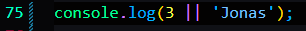

It uses any data type, return any data type.
Then do something short-circuiting also called short circuit evaluation.
If the first value is truthy value it'll imediately return the first value, js won't even take a look at the second value.


You can see that even if undefined and null they are both falsy values but it still returned null.


Keep in mind that if the restaurant.numGuests = 1, this will not work as you want.


The and operator checks both arguments here, so it returned jonas.
The reason is that the and operator has to check both arguments, and only when both of them are true it will return true.
And if the first element is falsy it will return the falsy value at once without even looking at the second argument.